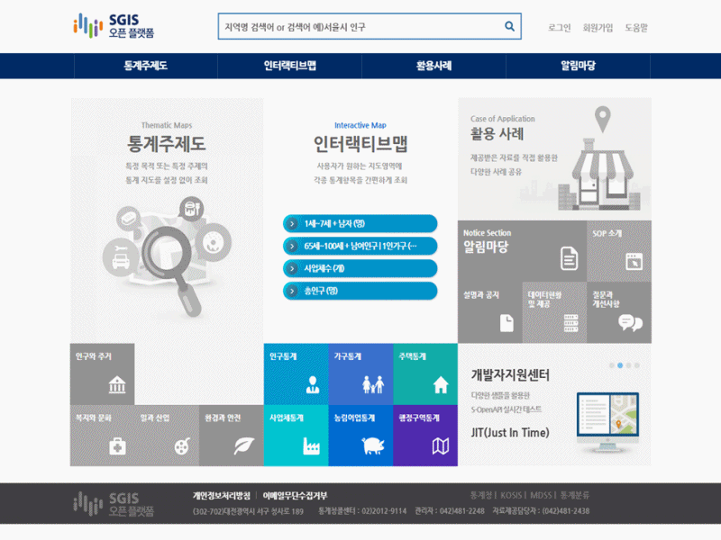
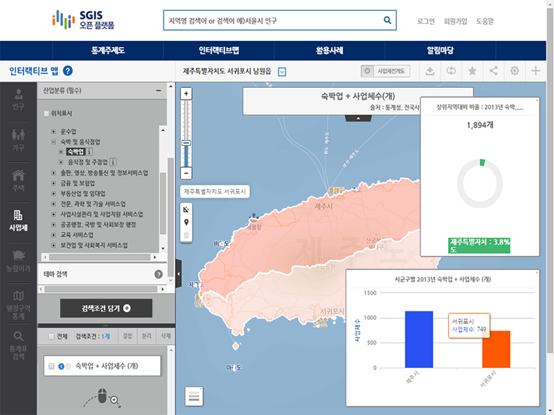
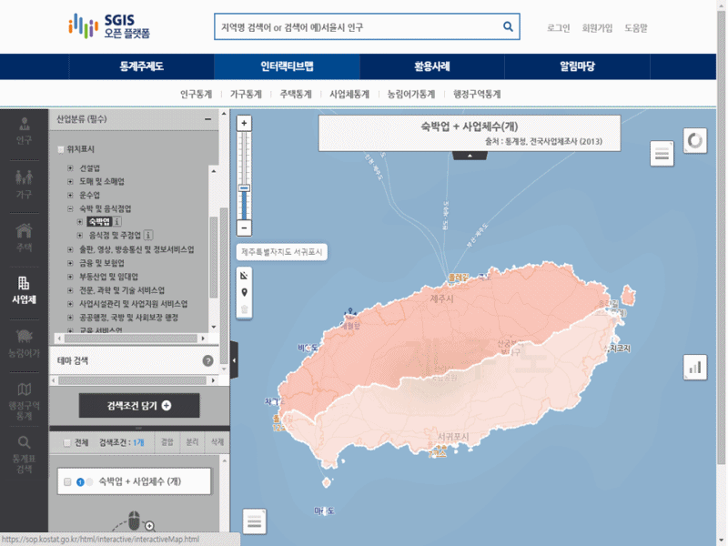
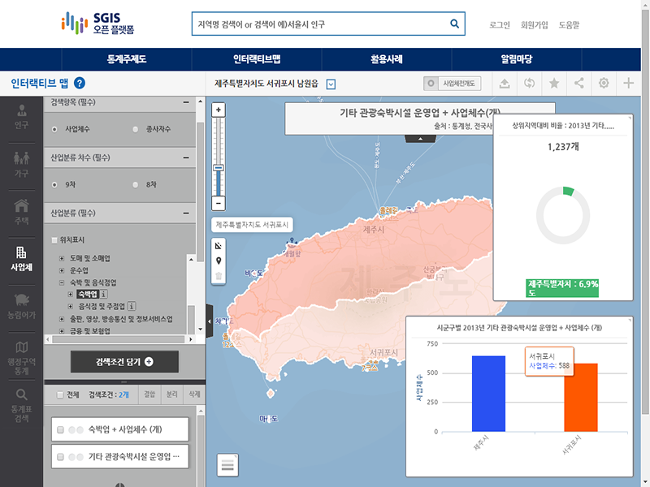
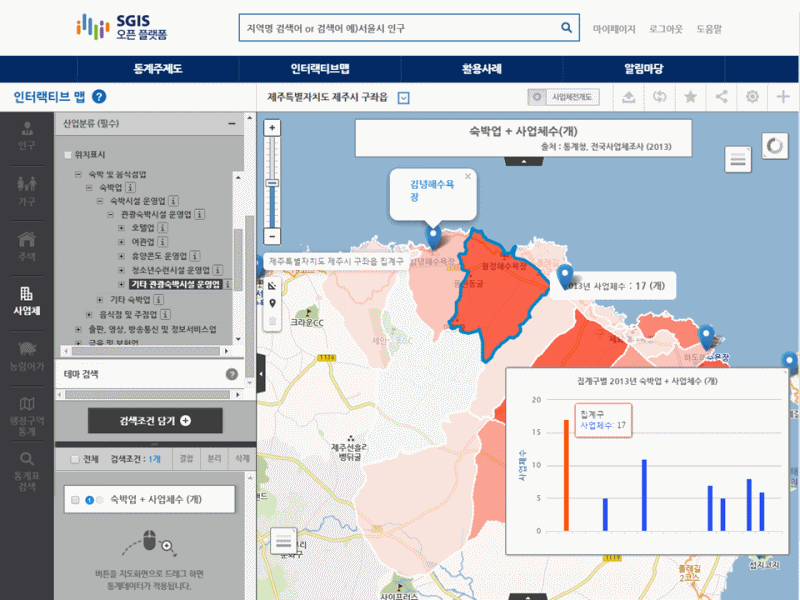

지역선택
1. 지역선택 메뉴를 이용해 제주도로 이동합니다.
통계선택
2. 산업분류(숙박 및 음식점업>숙박업)를 이용해 숙박업 통계를 검색합니다.
❶「사업체」버튼 선택 → ❷산업중분류(숙박 및 음식점업>숙박업)선택 → ❸ 「검색조건 담기」버튼 선택 → ❹ 제주도 경계 위로 통계버튼 끌어다 놓기 → ❺ 숙박업 통계지도 확인 → ❻ 제주시, 서귀포시 통계 확인 → ❼ 상위지역 대비 그래프 확인
[결과]
3. 숙박업 중 펜션 유사업종 사업체 통계를 검색합니다.
❶「사업체」버튼 선택 → ❷산업세세분류(숙박 및 음식점업>숙박업>숙박시설운영업>관광숙박시설운영업>기타관광숙박시설운영업)선택 → ❸산업분류 도움말(i) 확인 → ❹「검색조건 담기」버튼 선택 → ❺제주도 경계 위로 통계버튼 끌어다 놓기 → ❻펜션유사업종 통계지도 확인 → ❼ 제주도의 펜션유사업종 사업체수 확인
[Tip] 기타관광숙박시설운영업 : 단기간의 숙박시설을 운영하는 산업활동
- 사업체 산업분류는 통계분류포털(https://kssc.kostat.go.kr)에서 상세한 내용을 확인 하실 수 있습니다.
[결과]
4. 사용자 데이터(제주도 유명해변 주소)를 통계지도에 올릴 수 있습니다.
- 제주도 유명 해변주변에 펜션 창업을 위해 관광공사 웹페이지에서 해변 이름과 주소 정보를 찾아 펜션관련 사업체 통계지도 위에 올려 사용자 통계지도를 만들 수 있습니다. ❶「데이터업로드」버튼 선택 → ❷「양식다운로드」버튼 선택 → ❸엑셀파일에 해변 명칭과 주소 입력 → ❹「파일」버튼으로 수정된 엑셀파일 선택 → ❺ 「업로드」버튼 선택 → ❻「위치정보조회」(주소를 이용해 지도에 위치값 생성) 버튼 선택 → ❼「위치보기」 버튼 선택 → ❽통계지도 위에 유명해변(사용자 데이터)의 위치가 매시업 된 지도 확인 → ❾통계지도의 레벨(읍면동/집계구)을 변경하며 사용자 데이터와 비교
| 해변이름 | 위치 |
|---|---|
| 검멀레해수욕장 | 제주특별자치도 제주시 우도면 연평리 |
| 곽지과물해변 | 제주특별자치도 제주시 애월읍 곽지리 |
| 금능 으뜸원해변 | 제주특별자치도 제주시 한림읍 |
| ... | ... |

[Tip] 위치정보 조회
통계청이 가진 주소자료를 가지고 위치를 찾아주며, 위치를 찾지 못해 ‘변환 실패’ 된 경우는 사용자가 직접 위치를 지정해 줄 수 있습니다.
[결과]

5. 펜션(기타 관광숙박시설 운영업) 유사 업종의 사업체 위치를 조회 할 수 있습니다.
❶「사업체」버튼 선택 → ❷위치표시 설정 → ❸산업세세분류(숙박 및 음식점업>숙박업>숙박시설운영업>관광숙박시설운영업>기타관광숙박시설운영업)선택 → ❹「검색조건 담기」버튼 선택 → ❺지도경계 위로 통계버튼 끌어다 놓기(읍면동 이하 축척으로 자동 조절) → ❻지도위에 통계지도 및 사업체 개별위치 확인 → ❼「시계열」버튼 선택 → ❽년도 설정 → (9)사업체의 위치 및 변화 추이 확인
